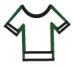
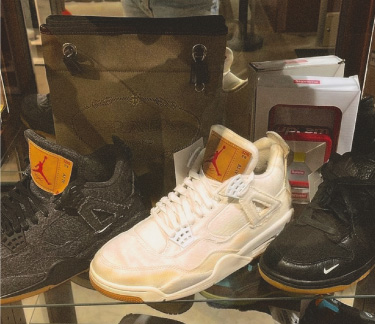
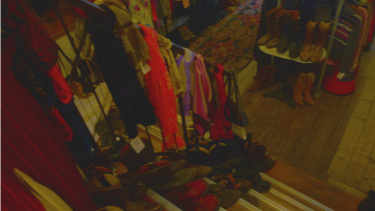
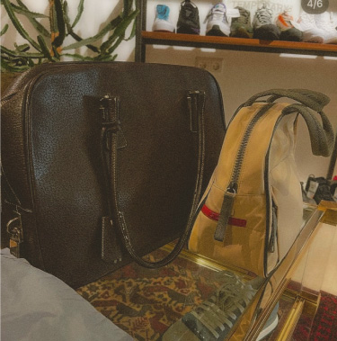
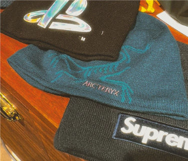
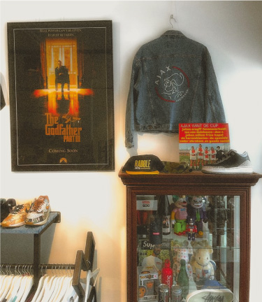

DE WERKING
Vintage kleding kopen voor die lage prijsjes is leuk, maar hoe verloopt nou het proces van die kleding?

HET VINTAGE SYSTEEM
Het labelen van de kleding werkt per vintage winkel anders. De een heeft veel duurdere prijzen dan de ander. Dit komt door de populairiteit van een vintage winkel of juist de stad waar de winkel staat. De kleren komen binnen door mensen die hun kleding hebben gedoneerd. Deze kleren komen meestal terecht in een grote loods waar de kleren weer naar de winkels worden gestuurd die op verschillende plekken van het land staan. Sommige vintage winkels kiezen er ook voor om de tweedehands kleding in te kopen van een groothandel die ook tweedehands kleding verkoopt. Die kleding kan bijvoorbeeld gekocht worden voor een bepaald aantal kilo's of juist per stuk.
Eigenlijk gaat elke vintage winkel hetzelfde te werk. Ze krijgen gedragen producten binnen voor hun winkel, geven ze een prijs en verkopen ze weer aan een nieuwe drager door.
HOE WORDEN DE PRIJZEN BEPAALD?
De prijzen verschillen bij elke vintage winkel. De prijzen worden meestal al bepaald in een groot soorteerhuis. Meestal als het prijsje van het kledingstuk is gevallen kunnen de medewerkers geen prijs bepalen, maar wordt dat kledingstuk weer teruggestuurd naar dat sorteerhuis.
HET WERKT OVERAL NET EVEN ANDERS
De prijs van een kledingstuk verschilt altijd heel erg per vintage kleding winkel. Bijvoorbeeld bij de ene vintage winkel is een Diesel broek 50 euro en bij de andere 15 euro. Je moet altijd net even geluk hebben of je de juiste winkel in bent gestapt met goede prijzen. Er wordt gekeken naar broek, shirt, trui en jas zodat de prijzen verschillen.
WERKING VINTAGE BIJ MOKUM
Mokum vintage is een vintage winkel die veel designer street wear verkoopt, maar waar halen ze die kleding nou vandaan en hoe prijzen ze de kleding? Mokum vintage haalt hun kleding vooral van andere verkopers. Deze verkopers verkopen meestal kilo's aan tweedehands merkkleren. Wanneer ze een bestelling hebben gedaan komt alle kleding binnen. Ze kijken naar voor hoeveel ze de kleding hebben gekocht en dan voor hoeveel ze de binnengekomen kleding moeten verkopen. De kleding is bijna altijd van een wat duurder merk, dus begrijpen ze ook dat de prijzen veel duurder zijn dan dat je zou verwachten van een tweedehands winkel.
WERKING VINTAGE BIJ KILO VINTAGE
Bij Kilo vintage gaat het weer veel anders te werk. Deze winkel prijst hun kleding niet door er prijsjes aan te hangen, maar ze een gekleurde ronde sticker te geven. Aan het begin van de winkel hangt een briefje die je informeert welke kleur sticker een bepaalde prijs heeft per kilo zodat de jassen bijvoorbeeld niet even duur zouden zijn als een shirt.
Het is soms wel fijn dat het per gram/ kilo gaat, want hoe lichter het item hoe goedkoper het is. Je hebt natuurlijk pech als je een jas wilt kopen die heel zwaar is.
DESIGNER VINTAGE
Het leukste aan tweedehands winkelen is dat alle designer kleding veel goedkoper is dan dat je het nieuw zou kopen. Als je geluk hebt is het item in een hele goede staat en veel goedkoper dan dat je hem nieuw zou kopen. Designer vintage wordt meestal verkocht in vintage winkels die alleen maar designer vintage verkopen. Zij maken altijd goede prijsjes voor designers als Louis Vuitton, Gucci etc. Deze producten worden meestal gedoneerd door mensen die hun designer items niet meer hoeven of ze worden gekocht door de designer vintage winkel bij de persoon zelf of op een website die zelf ook weer vintage designer items koopt en verkoopt.
DUURZAAMHEID
Je zou het niet zeggen, maar tweedehands kleding kopen is heel duurzaam. Als je terug denkt aan hoe alle kleding in de fabrieken of andere plekken wordt gemaakt om uiteindelijk in de prullenbak te belanden is heel zonde. Als je tweedehands kleding koopt vindt de gedragen kleding van iemand toch weer een thuis en was het maken van kleding toch niet voor niks geweest. Tweedehands kleding is een vorm van recycelen en recycelen draagt mee aan een groene en betere toekomst.
KLEDING DONEREN
Als je je kleding niet meer draagt kan je eigenlijk het beste je kleding doneren aan tweedehands winkels. Het is super duurzaam en je helpt er een ander persoon mee die het niet zo makkelijk heeft. De kleding wordt aan iemand verkocht die misschien dan juist heel blij is met je kleding. Je kan er ook voor kiezen om je kleding te verkopen op Vinted. Je verdient er dan ook nog wat mee en je kleding vindt een tweede thuis in een heel ander land. Kleding doneren is eigenlijk het beste wat je kan doen met je kleding wanneer je het niet meer draagt.
WERK MEE AAN HET MILIEU
IS TWEEDEHANDS KLEDING VIES?
Natuurlijk moet je wel kijken of er geen vlekken op de kleren zitten die je wilt kopen. Als je de tweedehands kleren een sterkte geur hebben kan je ze natuurlijk altijd in de was doen. Het is over het algemeen niet vies om tweedehands kleding te kopen, want nadat jij iets hebt aangehad die dag gooi je het gewoon weer in de was en draag je het weer. Dit is hetzelfde wanneer iemand anders iets aan heeft gehad en jij het in de was doet voor diegene.
Ik zou zeker tweedehandskleding blijven kopen, want het is goedkoop en voelt aan alsof je in een winkel shopt met allerlei verschillende soorten merken. Het is eigenlijk net zoals je kleding overneemt of leent van een vriend of vriendin van jou.
Denk altijd nog een keer na voordat je een kledingstuk weggooid, want 9 van de 10 keer kan je iemand anders er weer heel blij mee maken. Doneer je kleding in plaats van weggooien.